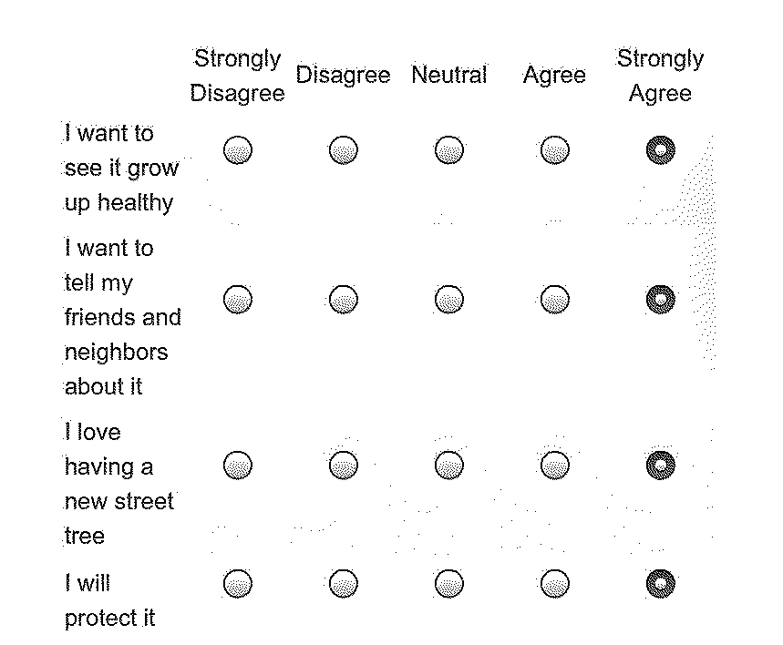

The form is a machine to say "no." It is a gate which rejects applicants according to invisible rules and logics of validity. It acts not just as a lens, but as a filter and barrier.

Forms are traditionally positioned at points of access to institutional resources. Callous computer systems make for desirable guards, and lend their aura of impartiality to broader systems of exclusion.
Healthcare, education, national borders — these systems have become psychologically defined by their imposing and emotionally demanding intake forms.
The ideological position of a software system cannot be separated from the larger systems of power and motivations they live within.

Software is a set of ideas and rules encoded into digital memory. The result is a material artifact which replicates and enforces the ideology of its creation.
Computers seek to present themselves as flat and objective, but their true nature is one of deeply layered surfaces. These folds accumulate ideological payloads that evade direct perception by both their users and their creators.
Computer programs encode a set of assumptions which form a model of reality. This model does not include a concept of the unknown. A computer perceives itself as an exhaustive and self-consistent world. "I/O" or "input/output", are explicit locations of interchange between that inner world and the broader universe.
Forms are one site of interface between the realm of the human and the realm of software. They act as a gateway where humans may enter. This portal is the point of contact between the rules of the software system and the messy reality of a human being. The form is the ideal place to investigate the reification of ideology through software.
"Free form" data is not accessible to computer systems - they crave strictly regimented fields and values. In order to enter through a form and be transformed into a legible digital artifact, humans shape themselves to fit the constraints of the form.
By design, the power of the form comes from these fields being constricting, limiting, and legible to the machine. This process is necessarily reductive and homogenizing.

Filling out a form with your name and information means becoming a piece of data on the terms of the software. This is the cost of submitting.


Computers reproduce ideology with power and subtlety. Software obscures intention and evades critical attention through the appearance of neutrality.
Forms are gateway for humans to engage with and submit to ideology. The surface area between software and human is increasing over time to become larger, more porous, and more diffuse. The borders of the cybernetic world are dissolving to become less visible.
As the interface envelopes us, it is becoming harder to trace the lines of control.
Infinite digital ideology encoded into ubiquitous contact, a constant state of submission.